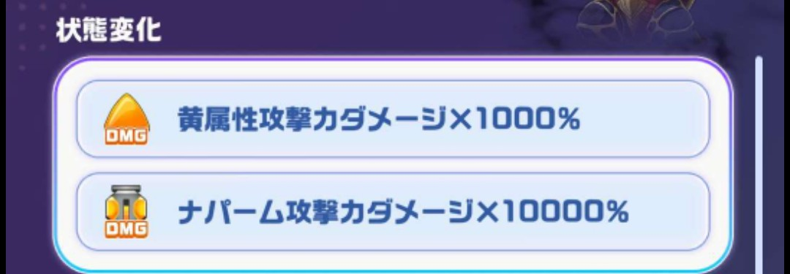
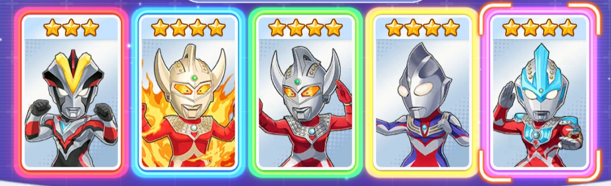
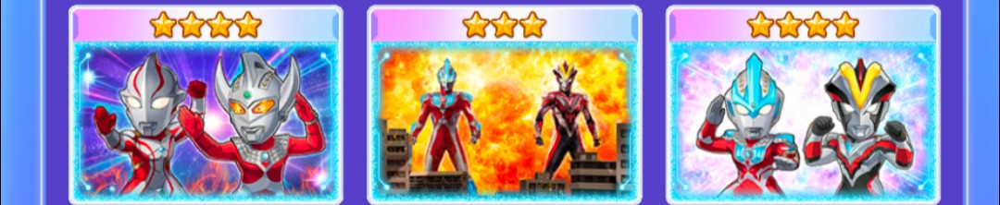
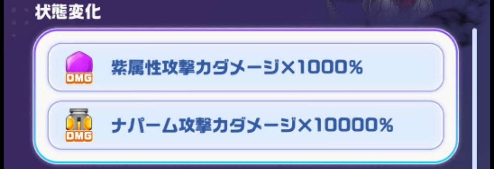
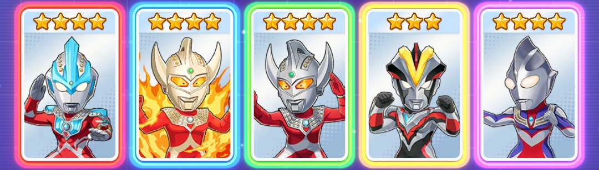

パズシュワ攻略まとめ
イベント解説(OTS 超ゴッヴ/超パズズ)
基本情報
・ピース操作で移動元の移動先との掛け合わせをすると移動元の属性になる
例えば、青必殺技玉を操作して赤必殺技に掛け合わせると青属性の合体必殺技となる
・サークルをタップした際に消去(選択される)色はピースは盤面で一番多い色が選ばれる
※同数の場合は盤面左上から→に見て最初に出てきた色となる
・必殺技玉をピッケルで壊すとターン消費せずそのターンから必殺技の効果を受けられます。
例えば、アストラの1ターン青属性の攻撃UPについてはピッケルを使用したターンとその次のターンまで
効果が及ぶので通常使用したときよりも1ターン多く恩恵が受けられます。
超ゴッヴ編
攻略のポイント
超ゴッヴは黄属性やナパームのダメージ補正がかなりついています
黄属性ステータスはあまり強化する手段がないためナパームで攻めるのが良さそうです

確定サークル
確定ナパーム
ギンガストリウムが居なくて序盤でナパーム作れない場合にオススメ
オススメパーティ
キャラ

・🟥赤キャラ→ウルトラマンビクトリー
・🟦青キャラ→ウルトラマンタロウ(ウルトラダイナマイト)
・🟩緑キャラ→ウルトラマンタロウ
・🟨黄キャラ→ウルトラマンティガ(タイプチェンジ)
・🟪紫キャラ→ウルトラマンギンガ(ギンガストリウム)
キャラ入れ替え候補
・ビクトリー→メビウス、ファイブキング、ミクラス
・マイトタロウ→メビウス、ファイブキング、ミクラス
・タロウ→メビウス、ファイブキング、ミクラス
・ティガTC→メビウス、ファイブキング、ミクラス
・ギンガストリウム→メビウス、ファイブキング、ミクラス
コア
・🟥赤コア→☆4RナパームコアUR(ナパームUP)
・🟦青コア→☆4BクリティカルコアSSR(ナパームUP)
・🟩緑コア→☆3GナパームコアUR(ナパームUP)
・🟨黄コア→☆3YナパームコアLR(ナパームUP)
・🟪紫コア→◇4PナパームコアSSR(ナパームUP)
・⬜自由枠コア→☆2RナパームコアUR(ナパームUP)
・⬜自由枠コア→☆3GナパームコアLR(ナパームUP)
・⬜自由枠コア→☆2GナパームコアUR(ナパームUP)
コア入れ替え候補
・🟥赤コア→ナパームUPのコア
・🟦青コア→ナパームUPのコア
・🟩緑コア→ナパームUPのコア
・🟨黄コア→ナパームUPのコア
・🟪紫コア→ナパームUPのコア
・⬜自由枠コア→ナパームUPのコア
・⬜自由枠コア→ナパームUPのコア
・⬜自由枠コア→ナパームUPのコア
リンクカード

・メビウス&タロウ
・ギンガ&ビクトリー
・『ウルトラマンギンガS』-ギンガ&ビクトリー-
ウルトラメカ
・優先順位1 ナパーム強化
・優先順位2 弱点強化
・優先順位3 黄属性強化
立ち回り
このパーティの戦略としてはナパームステータスを強化して主軸となる
ナパームを単発で発動しながらティガTCのアビリティで他キャラの必殺技を貯めて
他キャラの必殺技やアビリティでナパームを生成していく。
ボーナスに合わせてナパ×ナパを発動させるとさらなるスコアアップにつながる。
もし、ミクラスを編成しているならナパ×ナパ発動前に必殺技を撃っておく。
超パズズ編
攻略のポイント
超パズズは超ゴッヴと弱点属性は違うものの立ち回りはほぼ同じである。
キャラの配置だけ弱点属性に合わせて変更が必要。

確定サークル
オススメパーティ
キャラ

・🟥赤キャラ→ウルトラマンギンガ(ギンガストリウム)
・🟦青キャラ→ウルトラマンタロウ(ウルトラダイナマイト)
・🟩緑キャラ→ウルトラマンタロウ
・🟨黄キャラ→ウルトラマンビクトリー
・🟪紫キャラ→ウルトラマンティガ(タイプチェンジ)
キャラ入れ替え候補
・ギンガストリウム→メビウス、ファイブキング、ミクラス
・マイトタロウ→メビウス、ファイブキング、ミクラス
・タロウ→メビウス、ファイブキング、ミクラス
・ビクトリー→メビウス、ファイブキング、ミクラス
・ティガTC→メビウス、ファイブキング、ミクラス
コア

・🟥赤コア→☆4RナパームコアUR(ナパームUP)
・🟦青コア→☆4BクリティカルコアSSR(ナパームUP)
・🟩緑コア→☆3GナパームコアUR(ナパームUP)
・🟨黄コア→☆3YナパームコアLR(ナパームUP)
・🟪紫コア→◇4PナパームコアSSR(ナパームUP)
・⬜自由枠コア→☆2RナパームコアUR(ナパームUP)
・⬜自由枠コア→☆3GナパームコアLR(ナパームUP)
・⬜自由枠コア→☆2GナパームコアUR(ナパームUP)
コア入れ替え候補
・🟥赤コア→ナパームUPのコア
・🟦青コア→ナパームUPのコア
・🟩緑コア→ナパームUPのコア
・🟨黄コア→ナパームUPのコア
・🟪紫コア→ナパームUPのコア
・⬜自由枠コア→ナパームUPのコア
・⬜自由枠コア→ナパームUPのコア
・⬜自由枠コア→ナパームUPのコア
リンクカード

・メビウス&タロウ
・ギンガ&ビクトリー
・『ウルトラマンギンガS』-ギンガ&ビクトリー-
ウルトラメカ
・優先順位1 ナパーム強化
・優先順位2 弱点強化
・優先順位3 紫属性強化
立ち回り
このパーティの戦略としてはナパームステータスを強化して主軸となる
ナパームを単発で発動しながらティガTCのアビリティで他キャラの必殺技を貯めて
他キャラの必殺技やアビリティでナパームを生成していく。
ボーナスに合わせてナパ×ナパを発動させるとさらなるスコアアップにつながる。
もし、ミクラスを編成しているならナパ×ナパ発動前に必殺技を撃っておく。